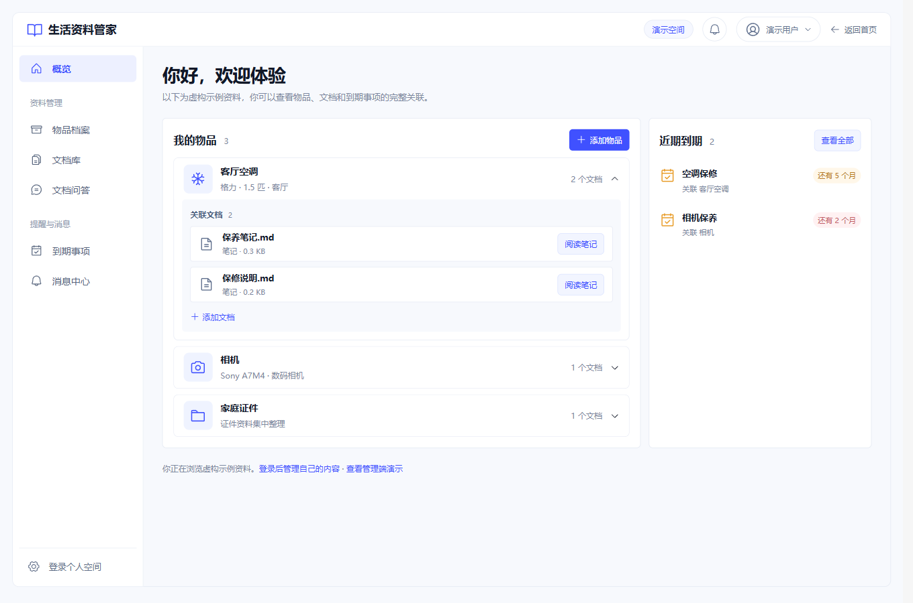

代表项目 / FEATURED PROJECT
已上线 · 持续开发中
生活资料管家zaclab.
让生活凭证，从「存着」变成「用得上」。
把购买凭证、保修说明和维修记录关联到物品。需要时在自己的 PDF 中提问，沿页码核对原文，再把用户确认的重要日期放进提醒。
Vue / TypeScriptJava / Spring BootPython / LangGraph

REAL PRODUCT · WEB打开演示 ↗
PRODUCT LOOP / 使用流程
- 01归档
- 02关联
- 03提问
- 04核对
- 05提醒
回答保留页码出处；重要日期经用户确认后进入到期事项。
01
Evidence
答案可以回到原文引用携带文档、页码和解析版本，支持从回答核对资料。
02
Boundaries
业务服务负责边界Java 校验身份、资料归属和版本，再转发授权正文。
03
Streaming
成功与失败都有状态流式展示、停止、超时和截断分别处理，会话保存终态。
04
Evaluation
改动前后有据可查冻结资料和题目，保留真实回答，区分引用合法与事实正确。